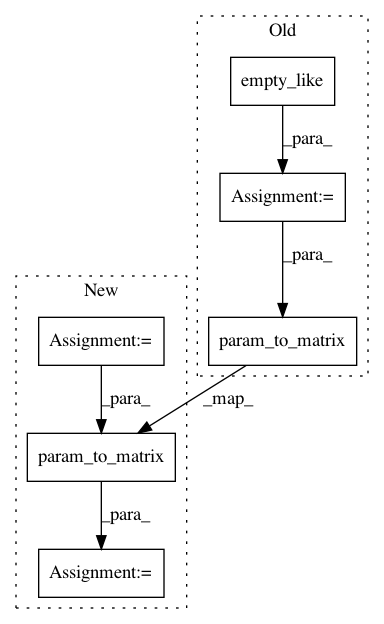

a8330ea0ff7bef4414d4d8d17ced6fbd89526ebd,dipy/align/tests/test_transforms.py,,test_param_to_matrix_2d,#,29
Before Change
dx, dy = np.random.rand(), np.random.rand()
theta = np.array([dx, dy])
expected = np.array([[1, 0, dx], [0, 1, dy], [0, 0, 1]])
actual = np.empty_like(expected)
param_to_matrix(ttype, dim, theta, actual)
assert_array_equal(actual, expected)
// Test rotation matrix 2D
dim = 2
After Change
dx, dy = np.random.rand(), np.random.rand()
theta = np.array([dx, dy])
expected = np.array([[1, 0, dx], [0, 1, dy], [0, 0, 1]])
actual = param_to_matrix(ttype, dim, theta)
assert_array_equal(actual, expected)
// Test rotation matrix 2D
dim = 2
In pattern: SUPERPATTERN
Frequency: 3
Non-data size: 6
Instances
Project Name: nipy/dipy
Commit Name: a8330ea0ff7bef4414d4d8d17ced6fbd89526ebd
Time: 2015-02-23
Author: jomaroceguedag@gmail.com
File Name: dipy/align/tests/test_transforms.py
Class Name:
Method Name: test_param_to_matrix_2d
Project Name: nipy/dipy
Commit Name: a8330ea0ff7bef4414d4d8d17ced6fbd89526ebd
Time: 2015-02-23
Author: jomaroceguedag@gmail.com
File Name: dipy/align/tests/test_transforms.py
Class Name:
Method Name: test_param_to_matrix_3d
Project Name: nipy/dipy
Commit Name: a8330ea0ff7bef4414d4d8d17ced6fbd89526ebd
Time: 2015-02-23
Author: jomaroceguedag@gmail.com
File Name: dipy/align/tests/test_transforms.py
Class Name:
Method Name: test_get_identity_parameters